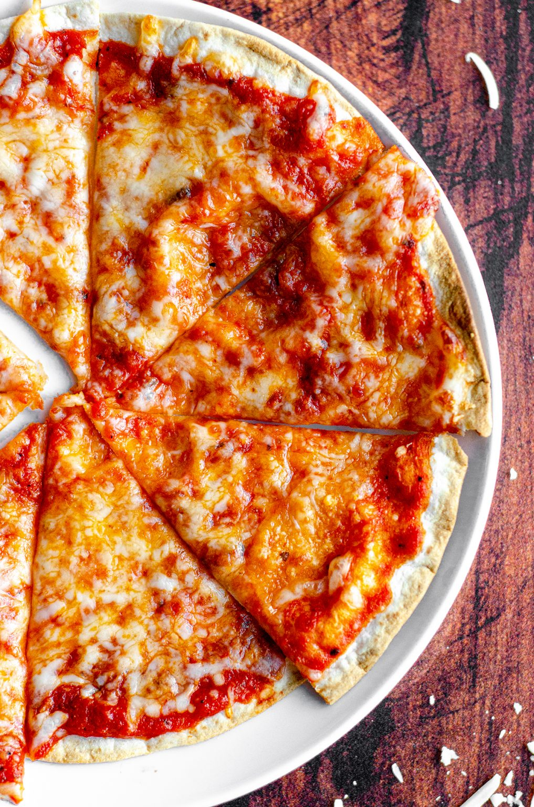

Diet Tortilla Pizza

Description
This is barely a recipe but it's an easily customizable dish that takes barely any effort at all for someone watching their weight.
622 Calories/ 47g Protein / 41g Carbs/ 29g Fat
Ingredients
- 2 10" Tortillas (Flour Recommended)
- 2 tbsp Pizza Sauce
- 20 Turkey Pepperonis
- 40g Low Fat Mozzerella Cheese (Grated)
- Mushrooms (as much as you want)
- 1/4 Sliced Onion (Small/Medium)
- 12 Pieces of Pickled Hot Peppers
- Any other kind of veggies you want
Steps
- Preheat the oven to 185 degrees (celcius)
- On a oven safe pan, top with a layer of parchment paper
- Load tortillas with tomato sauce and 10 turkey pepperonis per toritillas
- Top the tortillas with mushrooms, sliced onions, pickeld hot peppers and any other kind of veggie you want
- Finish off the tortillas by topping 20g of grated low fat Mozzerella cheese per tortilla
- Pop the pan with the tortillas into the oven and let it bake for 15~18 minutes until cheese is melted and slightly browned
- Take out the pizzas and let sit for 2~3 minutes before serving